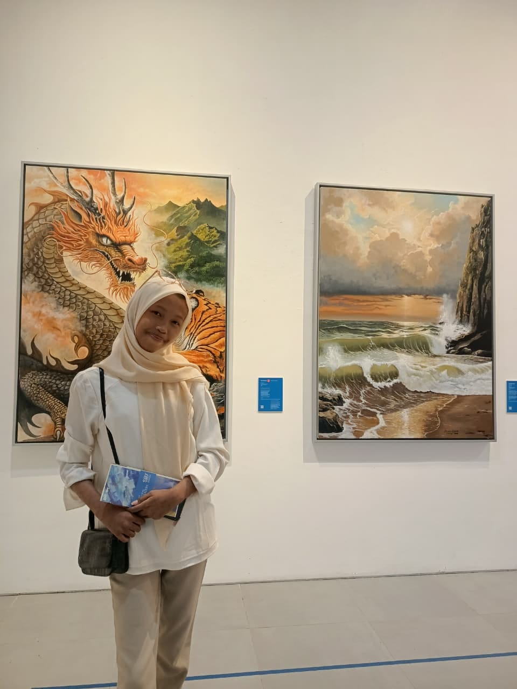
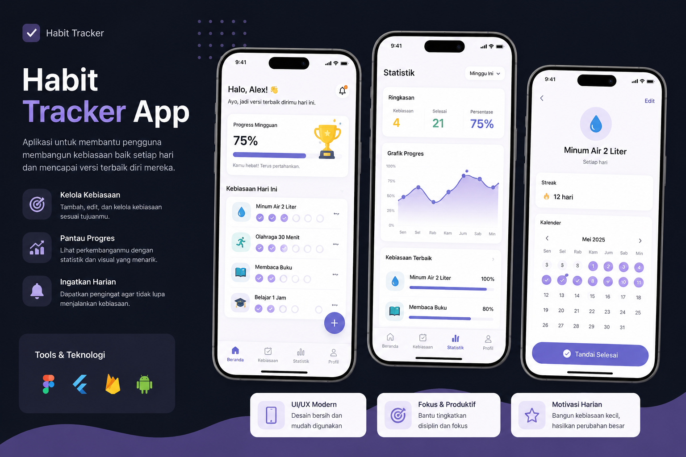
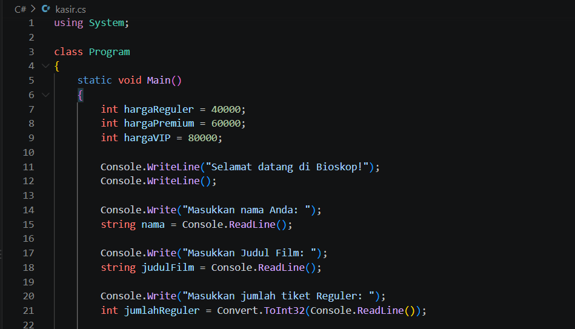

Saya adalah siswa SMK jurusan Rekayasa Perangkat Lunak (RPL) yang memiliki ketertarikan pada pengembangan web dan teknologi. Saya senang mempelajari hal-hal baru, mencoba berbagai hal, serta mengembangkan kemampuan melalui pengalaman dan proyek yang saya kerjakan. Selain di bidang teknologi, saya juga aktif dalam menulis dan public speaking. Kegiatan tersebut membantu saya dalam menyampaikan ide dengan lebih jelas, meningkatkan kemampuan komunikasi, dan membangun rasa percaya diri. Saya terus berusaha mengembangkan kemampuan di bidang yang saya minati dan terbuka untuk mempelajari hal-hal baru. Bagi saya, setiap pengalaman adalah kesempatan untuk belajar, mencoba, dan berkembang.
“Learn, Create, and Keep Growing.”

Habit Tracker merupakan aplikasi yang membantu pengguna membangun dan memantau kebiasaan positif sehari-hari melalui fitur pencatatan kebiasaan, pengingat, serta statistik perkembangan.

Program Kasir Bioskop merupakan aplikasi sederhana untuk membantu pengguna memesan tiket dengan pilihan kategori Reguler, Premium, dan VIP serta menghitung total harga tiket berdasarkan jumlah tiket yang dibeli.
Email: afiifahsna@gmail.com
Instagram: @kiiakael